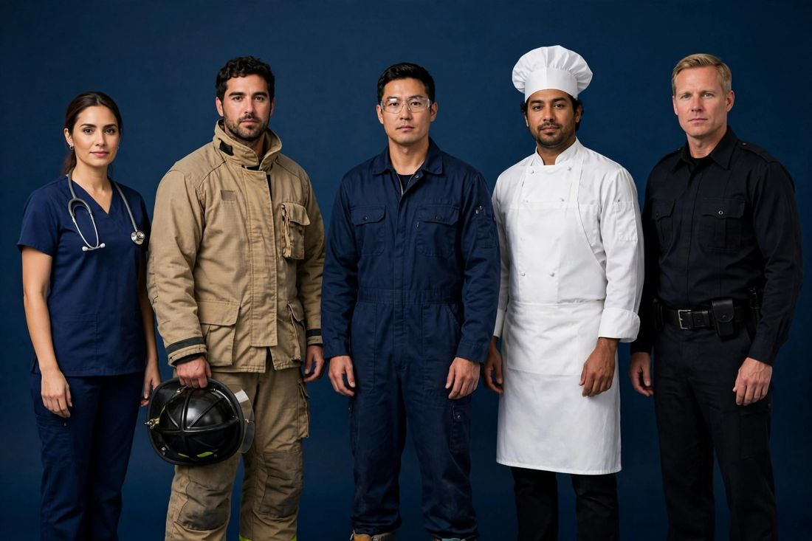

Ordering custom uniforms for your team or business is one of the most practical purchases a company makes — and one of the easiest to get wrong. A uniform has to fit twenty different body shapes, survive weekly washing, carry your logo clearly, and still look the same six months later. As a custom uniform manufacturer in Sialkot, Pakistan, we supply uniforms for hospitals, fire services, factories, hotels, security teams and offices — and the orders that go smoothly all follow the same sequence. This guide walks through it: defining the job first, choosing fabrics and safety standards, sizing a whole team, sampling, branding and realistic timelines.

Every good uniform order starts with a description of the working day, not a picture of a shirt. A nurse moves, bends and washes her uniform constantly; a firefighter works in extreme heat; a factory technician needs freedom of movement and flame resistance; a hotel receptionist needs to look pressed and professional for eight hours. Before you choose a style, write down who wears it, where they work, how often it is washed, and what it must protect against. That short description is what lets a manufacturer recommend the right fabric weight, the right cut and the right construction — and it is the first thing we ask every uniform customer to send us, even before a design.
Our uniforms and workwear range covers every field, and each type is specified differently:
If your field is not listed here, describe it — we make uniforms for every field, and a new uniform type usually starts from the same conversation: what the wearer does all day, and what the garment must survive.
For uniforms, fabric is a working decision, not a fashion one. Weight is measured in GSM — grams per square metre — and it decides how a garment hangs, breathes and lasts: lighter fabrics suit healthcare and hospitality, heavier fabrics suit industrial work. Flame resistance is a treatment and a standard, not a fabric colour: our industrial coveralls use Proban FR cotton, and our firefighter turnout suits use aramid/Nomex with a PTFE membrane to EN 469 and NFPA standards. Always ask which standard a fabric is certified to, and ask for the certificate before bulk production — a genuine manufacturer will provide it without hesitation. For gloves, the EN 388 rating tells you the tested level of abrasion, cut, tear and puncture resistance. If a supplier cannot name the standard or show the certificate, that is your answer.
Uniforms fail more often on sizing than on anything else, because one order has to fit a whole team. The reliable way is a size run: collect each wearer's chest, waist and height measurements, then map them to the manufacturer's size chart rather than guessing from retail sizes, which vary between countries. For a first order, ask for one fit sample in the most common size — or two, if your team includes very different body types — and have real wearers try it on the job for a day. Check shoulder width, sleeve length, trouser length, and whether pockets sit where hands actually reach. A fit problem found at the sample stage costs one correction; the same problem found across 200 finished uniforms costs the whole order. Keep the approved size chart on file: it makes every reorder faster and removes the sizing argument entirely.
MOQ — minimum order quantity — is the smallest production run a factory will make per style. Cutting and machine setup cost the same whether you make 20 pieces or 2,000, so factories set a floor. Our trial MOQ for uniforms is 20 pieces per style, and you can mix sizes within that quantity — so a team of 20 can order its first run at exactly team size, without buying stock nobody will wear. Larger teams usually order in two waves: the first run to confirm fit and fabric, then the full run once the team has worn it. That structure keeps the risk small and the reorder simple, and it works the same way for a hospital department, a security company or a restaurant group.
A uniform carries your brand every working day, so the branding step deserves the same care as the garment. Embroidered logos suit chest and sleeve positions and survive industrial washing far better than print; printed logos and sponsor marks suit larger areas and lightweight fabrics. Send your logo as a vector file where possible — a clear, high-resolution file is the minimum — and confirm the exact position and size of each mark before sampling, because a logo moved after production means rework. We sew in your own brand labels and size tags, and finish pieces with your packaging as instructed. If you ask for it, we can also add a "Made in [your country]" tag; otherwise our standard "Made in Pakistan" tag is used. Send label artwork early — labels are produced alongside sampling, so they never hold up your bulk order.
Sampling turns your specification into a physical uniform you can hold, try on and wash. Send a tech file if you have one — measurements, fabric, construction details and branding positions. If you don't, a clear photo, your logo file and a reference sample you already own are enough to start. We quote exactly for that piece once we have seen the design, then develop the sample in 7–10 working days and share photos for your approval. Judge the sample like a wearer, not a buyer: put it on, move in it, wash it once, and check the stitching, the print or embroidery, and the pockets. Small corrections at this stage are cheap; the same correction after bulk production is not.
Good factories check twice: in-line, while production is running, and again as a final inspection before packing — measurements, stitching, embroidery or print quality, labelling and count. For small orders, one piece from the production run can be sent to you for checking while the rest continues, and any change you ask for is applied to the remaining pieces. Either way, you should receive final quality-check photos before anything is dispatched, so what arrives is what you approved. For larger or more critical orders — firefighter turnout suits, for example — an independent pre-shipment inspection adds a documented check of quantity, workmanship, measurements, labelling and packing before the goods leave the factory; our inspection services cover initial production inspection, during-production inspection, pre-shipment inspection and factory audits across Pakistan.
Plan backwards from the date your team needs the uniforms. Sampling takes 7–10 working days. Bulk production time depends on the product and quantity — straightforward uniform styles move faster, while a first order of certified firefighter turnout suits takes longer because the materials and certification steps are part of the build. Add shipping time to North America or Europe by air (DHL/FedEx) or sea. A team that starts sampling today can realistically be wearing its uniforms within one season — a team that waits for a "perfect" large order usually starts a season later with more risk, not less. Tell your manufacturer the date the uniforms are actually needed, not the date you hope to order: a real deadline lets the factory plan the run properly.
Before you commit to any uniform supplier, ask:
A serious factory answers plainly and asks to see your design before quoting. Be cautious with anyone who quotes a firm price from a one-line description — an exact quote is only possible once the piece itself is understood.
You don't need a finished tech pack or a big budget to begin — you need one design, your logo, and a rough idea of how many people will wear it. Send us your design, tech file or even a clear photo on WhatsApp at +92-339-5099397 or by email at contact.safettech@gmail.com, and we will reply with an exact quote for that piece and a sampling plan. Or use our contact page to request a sample — your team's uniforms can start with as little as 20 pieces per style.

Uniforms are worn every single day by the people who represent your business, so I take them personally. Send me your design, your logo and a rough idea of quantities, and I will look at it myself and tell you honestly what fabric and construction your team actually needs.
Ahmed Zahid
Founder & Director, Safe-T TECH International · Sialkot, Pakistan
Send your design today — samples in 7–10 days, trial orders from just 20 pieces per style.